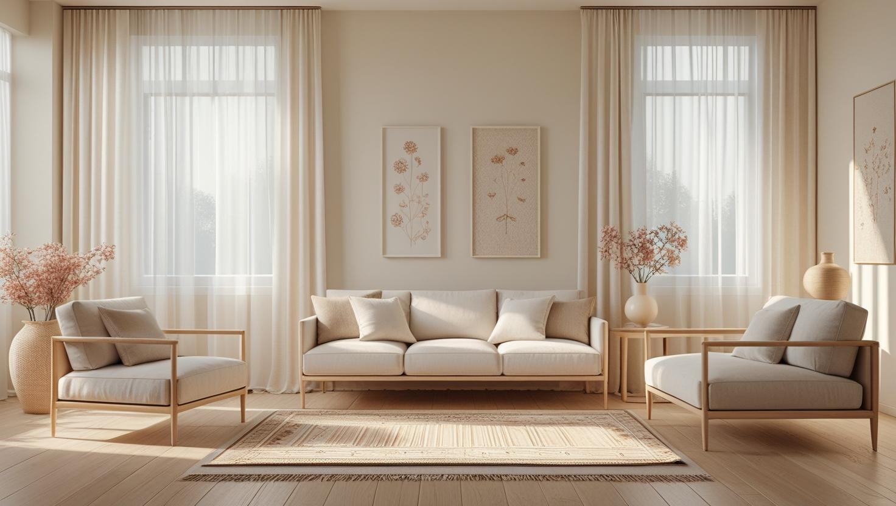
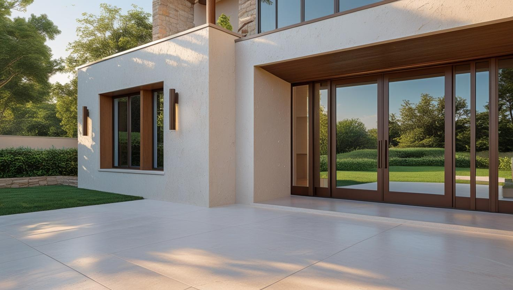
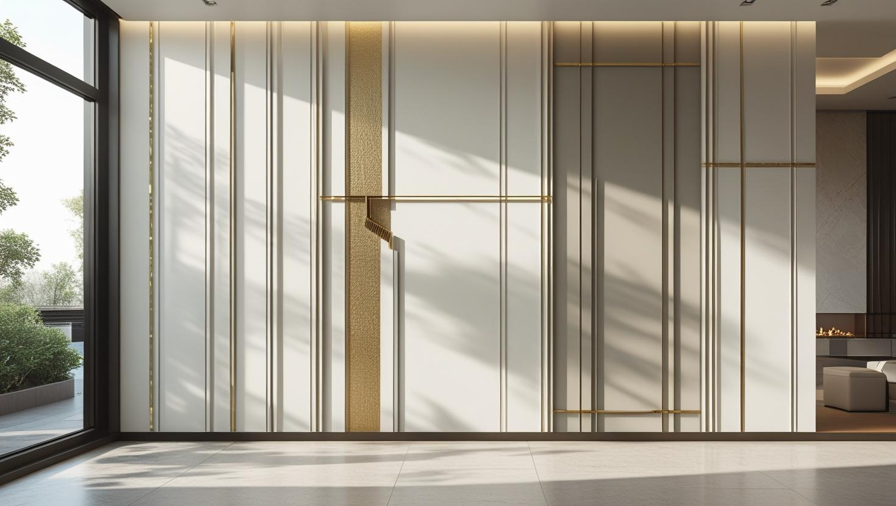

İstanbul Kağıthane Profesyonel Boya Ustası
Kağıthane'de yeni teslim edilen bir dairenin ilk boyası ile yıllanmış bir apartmanın yenilenmesi aynı iş değildir; 20 yıllık tecrübemiz bu farkı keşifte görmemizi sağlıyor. İç ve dış cephe boyamada hazırlığı yüzeye ve bina kurallarına göre belirliyoruz.
Kağıthane'de Boya Badana: Ofis Bölgesi ve Konut Karışımı
Kağıthane boyacı talebi ilçenin son yıllarda değişen yapısını yansıtıyor. Bir yanda yeni ofis ve plaza bölgeleri, diğer yanda uzun yıllardır yerinde duran konut stoğu var.
Ofis tarafında belirleyici olan çalışma düzeni: iş mesai dışına ve hafta sonuna alınıyor, bölüm bölüm ilerleniyor, elektronik ekipman ve zemin örtülüyor. Konut tarafında ise iş genellikle yüzey hazırlığıyla başlıyor — raspa, çatlak ve tavan kenarı onarımı.
Apartman merdiven boşluğu ve ortak alan boyası da Kağıthane boya ustası olarak planladığımız işler arasında.
Hizmetlerimiz

İç Mekan Boyama
Yeni teslim edilen dairelerde iş genellikle astar ve ilk kat boyayla, Gültepe ve Nurtepe gibi yerleşik mahallelerdeki apartmanlarda ise çatlak ve rutubet izi tamiriyle başlar. Büro katlarında çalışma alanı bölümlere ayrılarak boyanır.
- Yeni dairede astar ve ilk kat boya
- Saç kılı çatlak ve alçı tamiri
- Büro katında bölüm bölüm boyama
- Tavan, kapı ve süpürgelik boyama

Dış Cephe Boyama
Tepelere yayılan mahallelerin yokuşlu ve dar sokaklarındaki apartmanlarda iskelenin kurulacağı yer ve malzeme taşıma yolu keşifte belirlenir. Yakınında inşaat süren binalarda toz durumu, uygulama günlerinin seçimini etkiler.
- Apartman cephesi yenileme
- Çatlak ve derz dolgusu
- Balkon ve parapet boyama
- Toza göre uygulama günü planı

Dekoratif Boyama
Yeni dairelerde salon ve antre için vurgu duvarı, büro ve ofislerde kurumsal renk uygulamaları yapıyoruz. Renk ve yüzey parlaklığı, odanın aldığı ışığa ve kullanılacak mobilyaya göre keşifte netleşir.
- Salon ve antre vurgu duvarı
- Kurumsal renk uygulaması
- Mat ve saten yüzey seçenekleri
- Doku ve efekt boyaları
Fiyat Tablosu
| Hizmet Türü | Metrekare Fiyatı | Ortalama Süre (100m²) | Garanti |
|---|---|---|---|
| İç Cephe Boyama | 100-200 TL | 2-3 Gün | Uygulama kapsamına göre |
| Dış Cephe Boyama | 150-280 TL | 3-5 Gün | Uygulama kapsamına göre |
| Dekoratif Boyama | 250-500 TL | 4-7 Gün | Uygulama kapsamına göre |
| Ofis Boyama | 120-220 TL | 2-4 Gün | Uygulama kapsamına göre |
Metrekare fiyatları yaklaşık ön değerlendirme aralığıdır. Uygulanacak ölçüm yöntemi, boyanacak alanın kapsamı, yüzey durumu, tamirat ihtiyacı, kat sayısı ve malzeme seçimi keşif sırasında netleştirilir.
Dış cephe boya fiyatları uygulama alanı için yaklaşık 150–280 TL/m² aralığındadır. Kesin hesaplama yöntemi ve teklif; yüzey durumu, bina yüksekliği, erişim veya iskele ihtiyacı, tamirat kapsamı, boya sistemi ve uygulanacak kat sayısına göre keşif sırasında netleştirilir.
Uygulama kapsamına göre işçilik garantisi sağlanır. Garanti kapsamı ve istisnaları teklif veya iş sözleşmesinde belirtilir.
Bu rakamlar İstanbul Boyacılık'ın 2026 gösterge fiyat aralığıdır. Bir piyasa ortalaması değildir. Kesin fiyat; yüzey durumu, hazırlık ve tamirat miktarı, uygulanacak kat sayısı, seçilen malzeme sınıfı, ulaşım ve kat koşulları ile evin eşyalı mı boş mu olduğu keşifte görüldükten sonra belirlenir.
Kağıthane'de ofis işlerinde aralığı belirleyen şey yüzey değil çalışma düzeni: mesai dışı ve hafta sonu çalışma, bina yönetimi kısıtları. Konut tarafında ise çıkan raspa ve tamirat miktarı belirleyici.
Kağıthane'deki Yeni Konut Projelerinde İlk Boya ve Saç Kılı Çatlaklar
Yeni teslim edilen dairede boya işi, yüzey düzgün görünse bile astarla başlar; ilk yıllarda sıva ve alçıda görülebilen ince çatlaklar da bu aşamada ele alınır. Dönüşümle yükselen yeni konutlar bu yüzden eski apartmanlardan farklı bir hazırlık ister.
Kağıthane, İstanbul'un kuzeyinde Haliç'e yakın konumuyla dönüşüm sürecindeki ilçelerden biridir. Çağlayan ve Gültepe'deki eski konut stoku, Seyrantepe'deki yeni yapılaşma projeleri ile Hamidiye mahallesinin karma yapısı; ilçeyi farklı boya ihtiyaçlarını barındıran özgün bir alan haline getiriyor. Kağıthane boyacı ustası olarak dönüşüm binalarındaki alçı ve macun hazırlığından lüks konutların dekoratif boyalarına kadar her ölçekte deneyimle hizmet veriyoruz.
- Astar: yeni alçı ve sıva boyayı hızla emdiği için astarsız uygulamada renk alacalı çıkabilir.
- İnce çatlaklar: saç kılı çatlaklar açılıp esnek dolguyla kapatılır, üzeri zımparalanır.
- Site kuralları: çalışma saatleri, asansör koruması ve otopark kullanımı işe başlamadan yönetimden öğrenilir.
Çatlakların nedenlerini ve tekrar etmemesi için yapılanları boya çatlaklarını önleme ve tamir rehberimizde ayrıntılı olarak bulabilirsiniz.
Gültepe, Nurtepe ve Harmantepe'de Apartman Merdiven Boşluğu ve Ortak Alan Boyası
Yerleşik mahallelerdeki apartmanlarda ortak alan boyası bütün sakinleri ilgilendirdiği için yönetim kararıyla başlar ve bina kullanılmaya devam ederken yapılır. Merdiven boşluğu, giriş holü ve kapı önleri bu işin tipik kapsamıdır.
Merdiven boşluğu ve bina girişi ortak alan sayıldığından boya kararı genellikle yönetim planına göre kat malikleri ya da yönetim tarafından alınır. Kararda renk, boyanacak yüzeyler ve çalışma günleri birlikte yazılırsa sonradan anlaşmazlık çıkmaz. Uygulamada kat kat ilerlenir; trabzan ve duvar dipleri korunur, ıslak bölümler işaretlenir.
Aracın bina önüne yanaşamadığı yokuşlu ve dar sokaklarda malzeme taşıma süresi uzar; bu da iş planına baştan eklenir. Ortak alan işlerinde fiyatın hangi kalemlerden oluştuğunu apartman merdiveni boyama fiyatları rehberimizde görebilirsiniz.
İnşaat Süren Sokaklarda Dış Cephe, Balkon ve Pencere Kenarı Boyası
Yakınında yıkım veya inşaat devam eden binalarda toz, henüz kurumamış boyaya yapışarak yüzeyde pürüz ve renk farkı bırakabilir. Kağıthane'de kentsel dönüşümün sürdüğü sokaklarda bu durum dış cephe ve balkon işlerinin takvimini doğrudan etkiler.
- Uygulama günü: komşu şantiyede toz çıkaran işlerin yoğunlaştığı günler mümkünse boyadan hariç tutulur.
- Yüzey temizliği: cephe ve balkon parapetleri boyadan önce yıkanır ya da fırçayla tozdan arındırılır.
- İç mekân kuruması: pencereler toz nedeniyle açık bırakılamıyorsa havalandırma ve kuruma buna göre planlanır.
Kağıthane Boya Badana Fiyatlarını Okurken Nelere Bakmalı?
Sayfadaki fiyat tablosu metrekare aralıklarını gösterir; bir dairenin bu aralığın neresine düşeceğini yüzeyin durumu ve işin kapsamı belirler. Aynı büyüklükteki yeni daire ile eski apartman dairesinin teklifi bu nedenle farklı çıkabilir.
- Tavanların ve kapı, süpürgelik gibi ahşap aksamın kapsama dahil olup olmadığı
- Yeni yüzeyde astar, eski yüzeyde raspa ve çatlak tamiri gerekip gerekmediği
- Dairenin eşyalı ya da boş olması ve odaların hangi sırayla boşaltılabileceği
- Site veya bina kurallarının çalışma saatini, dolayısıyla gün sayısını kısıtlayıp kısıtlamadığı
Tahmini bütçeyi önceden görmek isterseniz 2026 ev boyama fiyatları rehberine göz atabilirsiniz; Kağıthane boya ustası olarak kesin fiyatı keşiften sonra yazılı teklifle paylaşıyoruz.
Kağıthane’de Hizmet Verdiğimiz Mahalleler
Çağlayan'daki büro katları, Seyrantepe'deki yeni konutlar ve Gültepe ile Nurtepe'nin yokuşlu sokaklarındaki apartmanlar dahil şu mahallelerde çalışıyoruz:
Kağıthane Mahalleleri
- Kağıthane Çağlayan Mahallesi
- Kağıthane Çeliktepe Mahallesi
- Kağıthane Emniyet Evleri Mahallesi
- Kağıthane Sultan Selim Mahallesi
- Kağıthane Gültepe Mahallesi
- Kağıthane Gürsel Mahallesi
- Kağıthane Harmantepe Mahallesi
- Kağıthane Hürriyet Mahallesi
- Kağıthane Seyrantepe Mahallesi
- Kağıthane Şirintepe Mahallesi
- Kağıthane Merkez Mahallesi
- Kağıthane Ortabayır Mahallesi
- Kağıthane Telsizler Mahallesi
- Kağıthane Talatpaşa Mahallesi
- Kağıthane Yahya Kemal Mahallesi
- Kağıthane Hamidiye Mahallesi
- Kağıthane Nurtepe Mahallesi
- Kağıthane Mehmet Akif Ersoy Mahallesi
- Kağıthane Yeşilce Mahallesi
Kağıthane Boyacılık Müşteri Yorumları
"Kağıthane iç cephe boyama hizmeti için İstanbul Boyacılık'la çalıştım. Zamanında geldiler ve çok temiz çalıştılar. Güvenilir boyacı ustası arayanlara öneririm."
Sena Yalçın
Çağlayan / Kağıthane
"Kağıthane ofis boyama hizmeti aldık. Renk seçimi konusunda yardımcı oldular ve tüm süreç planlandığı gibi ilerledi."
Emirhan Acar
Hamidiye / Kağıthane
"Kağıthane boya badana ustası olarak çok memnun kaldım. Ekonomik fiyat ve kaliteli işçilik arayanlara kesinlikle tavsiye ederim."
Mert Sezer
Seyrantepe / Kağıthane
Faydalı Bağlantılar
Kağıthane boya badana planında fiyat hesabı, boya markası ve yakın ilçe seçeneklerini birlikte değerlendirmek için aşağıdaki rehberler kullanılabilir.
Kağıthane'de Boya Badana İçin Sık Sorulanlar
Kağıthane'de yeni teslim aldığım daireye boyaya ne zaman başlanabilir?
Sabit bir gün söylemek yerine iki koşula bakıyoruz: sıva ve alçının yeterince kuruması ve site yönetiminin iş yapılmasına izin verdiği gün ve saatler. Keşifte duvarlarda nem ve ince çatlak kontrolü yapıyor, astar ihtiyacını belirliyor ve takvimi taşınma tarihinize göre kuruyoruz.
Apartmanımızın merdiven boşluğunu boyatmak için ne yapmamız gerekiyor?
Önce yönetimin ya da kat maliklerinin kararıyla renk ve kapsam netleşmeli. Ardından keşifte duvar dibi ve trabzan çevresindeki yıpranmayı, tamir gereken yerleri ve malzemenin binaya nasıl taşınacağını görüyoruz. İş kat kat ilerlediği için sakinler binayı kullanmaya devam edebiliyor.
Gültepe veya Nurtepe'deki eski apartman dairemi eşyalıyken boyatabilir miyim?
Evet. Eşyaları oda ortasında toplayıp örtüyor, zemin ve süpürgelikleri bantlayarak oda oda ilerliyoruz. Eski dairelerde duvarlardaki rutubet izi ve çatlaklar boyadan önce işaretlenip onarılıyor; merdiveni dar binalarda büyük mobilyayı yerinden taşımadan koruyarak çalışıyoruz.
Ofisimizi çalışırken boyatabilir miyiz?
Evet. Bölüm bölüm ilerliyor, gece ve hafta sonu çalışıyoruz. Boyanan bölümü ayırıyor, elektronik ekipmanı ve zemini örtüyoruz; diğer bölümlerde çalışma devam edebiliyor.
Plaza ve iş merkezlerinde yönetim izni gerekiyor mu?
Çoğunda gerekiyor. Çalışma saatleri, yük asansörü kullanımı ve malzeme taşıma güzergâhı kurala bağlı oluyor. Randevu öncesinde bunu öğrenip planı ve ekip sayısını buna göre kuruyoruz.
Ofis için hangi boya daha uygun?
Yoğun kullanılan koridor ve ortak alanlarda silinebilirliği yüksek, dayanımlı bir iç cephe boyası uzun vadede fark yaratıyor. Toplantı ve çalışma odalarında ise mat yüzeyler yansımayı azaltıyor. Seçimi kullanım yoğunluğuna göre keşifte birlikte yapıyoruz.
İletişim
İletişim Bilgileri
Telefon: 0507 832 29 12
E-posta: boyaustamistanbul@gmail.com
10+ Uzman Ustamızla Kağıthane ve çevresine hizmet veriyoruz.
Çalışma Saatleri: Pzt-Cmt 00:00-23:59